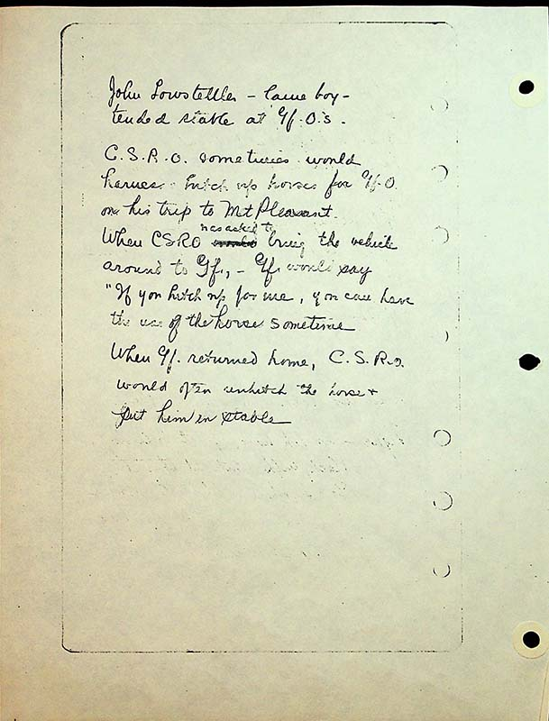

John Lowstettler- lame boy- tended stable at Gf O’s.
C.S.R.O. sometimes would harness & hitch up horses for Gf O on his trip to Mt. Pleasant
When CSRO was asked to bring the vehicle around to Gf,- Gf would say “If you hitch up for me, you can have the use of the horse sometime
When Gfreturned home, C.S.R.O. would often unhitch the horse and put him in stable